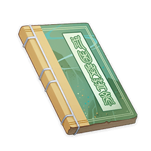

Liyue · Books & Literature
Stone Tablet Compilations: Vol. I
Historian Zichang’s translated compilation presents fragmentary Liyue history from ancient stone tablets, from Rex Lapis’s arrival and Guizhong’s Guili Plains settlement to the later formation of Liyue Harbor and the Qixing.

Zichang’s translated fragments
The item description identifies this as a history book compiled and translated from Liyue’s ancient stone tablets by historian Zichang. It is found in the Knights of Favonius library in Mondstadt, though its subject is the history of Liyue.
The surviving English text contains ellipses between sections and explanatory notes. It should be read as Zichang’s edited translation of fragmentary inscriptions, not as one continuous contemporary chronicle.
Rex Lapis and Shanhui Fort
The opening passage says Rex Lapis descended, lowered the tides, raised Mt. Tianheng, and calmed the waves. The people mined jade, bored tunnels, and built a settlement called Shanhui Fort, where mining supported wide prosperity.
Zichang’s note tracks the place-name’s later form as Shanhui Rock and explains how its older meaning was lost. This is a concrete example of the book adding the historian’s interpretation alongside the translated record.
Guizhong and the Guili Plains
The compilation next describes Guizhong, the Lord of Dust, as an ally of the Lord of Rock. She protects Mt. Tianheng with the Guizhong Ballista, brings her people north, and teaches them agriculture. The flourishing network of farms and roads becomes Guili Plains, named for the people’s return to a place where they are content.
A later fragment says the gods’ struggle for dominance devastates the plains and claims Guizhong’s life. Rex Lapis then leads his people south of Mt. Tianheng, leaving the former settlement abandoned.
The Qixing and Liyue Harbor
The final preserved passage places the Qixing’s rise after Rex Lapis pacifies the gods and the people turn to trade and crafts. It describes the Qixing as organizing Liyue’s commercial life and the Millelith as serving under their authority, producing the governance structure associated with Rex Lapis’s rule.
The text supplies a compact origin account for Liyue Harbor, not a complete civic history. Its translation notes also caution that some English wording compresses more specific Chinese terms, so individual phrases should not be used to invent detailed institutions beyond what the source supports.
What this volume does not contain
This book is not a catalogue of every ancient tablet, a set of environmental puzzle instructions, or a compilation of contracts and dragon-sealing decrees. It presents selected historical fragments and Zichang’s notes.
Use it with other Liyue sources when building a chronology. Its author, subject, location, and fragmentary nature are all stated; the previous claims about tablet sites, puzzle mechanisms, and a Liyue Archaeological Society author were unsupported.
This is an original CoreGG reading guide, not an official HoYoverse article or a reproduction of the game text. Source links below identify the records used so you can check the original context.
Sources & references
Check these sources for the original game text and reference trail.